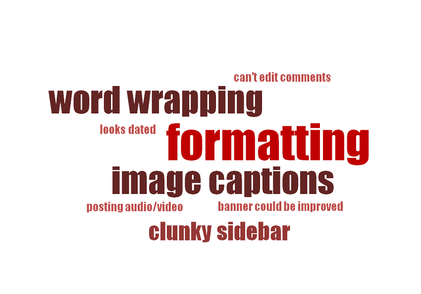
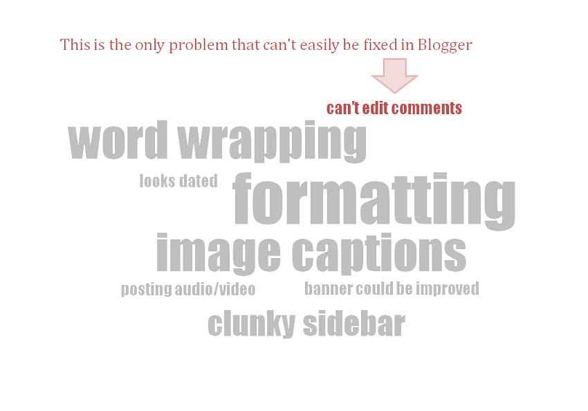
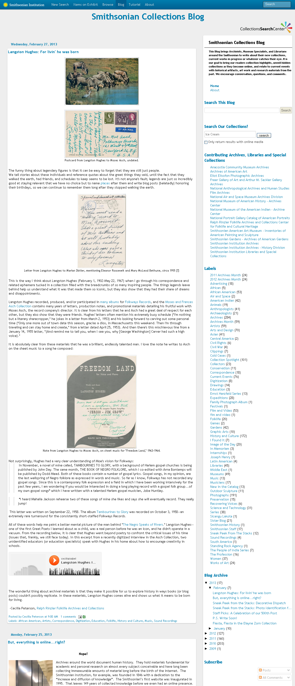

I volunteered for one week at the Smithsonian Collections Blog as part of UMSI's Alternative Spring Break program. The contributers of the blog were frustrated with their current platform, Blogger, and my original task was to research a new platform to switch to. However, after reviewing surveys and conducting interviews, I discovered that most of the problems had to do with formatting.
I realized that nearly all of the issues could be solved through simple CSS modifications. At my recommendation we met with the Smithsonian's IT department where I was able to obtain the code and implement the fixes. This resolved nearly all the problems without having to migrate the entire blog, which would have been extremely difficult and time-consuming.
This project taught me to always look beyond the task at hand to find the root cause of problems before attempting a solution. It was very gratifying to be able to put my knowledge to good use (and as a bonus I also got to try lots of delicious cookies at the office). ☺